Open Cotylorhiza · Previous Cassiopea correction · Initial jellyfish pass
Version 0.6.42 · October 27, 2026 Bangkok · one existing species, zero additions. This individual correction improves visible body structure, club profiles, surface variation and local movement on the same model.
Rounded external tissues still overlap without fused histological union or a resolved canal/mouthlet lumen. Fine folds, terminal-club profiles, bell rim relief, natural variation, optical scattering and specimen proportions remain stylized or unmeasured. Local contraction is not fitted swimming, feeding or physiology. Numerical branching rhythms, small pointed folds, central oral-disk transitions, simplified closed club heads and pale bell appearance still differ from real individuals. Counts, dimensions, pigment, timing and opacity are selected, not measured. Final images use software compatibility lighting; WebGL tissue optics are not verified. No photorealism, independent specialist certification, accuracy percentage or completed swimming/feeding claim.
Motta et al.2025 supplies the complete live-adult Figure1 photograph and oral-arm sections in Figure6. Oral axes branch; some white/violet club-shaped termini contain blind-ended canals. They must not all be called open mouths. Section stains do not establish live colour. Selected anatomy and sampling text was read; not all figures or supporting data were examined.
The S5 adult swimming recording and caption guide a comparatively stiff central dome and more flexible distal bell. Four actual displayed video states were inspected qualitatively. No speed, pulse rate, trajectory or fluid force is fitted. The original recording remains at the publisher.
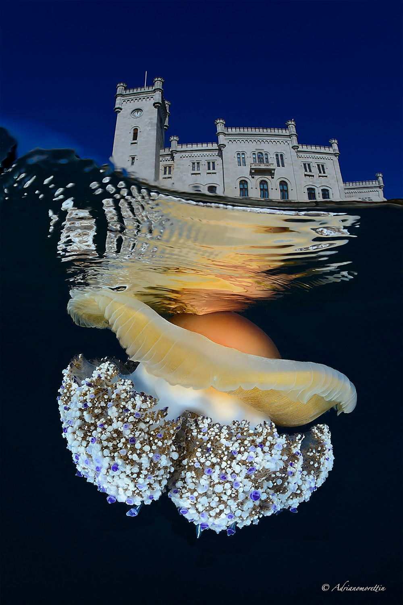
The existing Antonio Sontuoso CC BY-SA 2.0 profile photograph, source caption and delivery bytes are preserved. No organism photograph was generated or projected onto the mesh. Exact grants, download/delivery hashes and source scopes are in the machine-readable report.
The specialist WoRMS record Aphia135297 confirms the accepted species-level name; the retained GBIF backbone identity is2264578. This name check is not a new determination of either photographed individual.
Broad plates and repeated violet spheres were visible. Anatomy camera crops and simplified bell material also limited comparison. These are actual earlier site captures, not reconstructed before images.
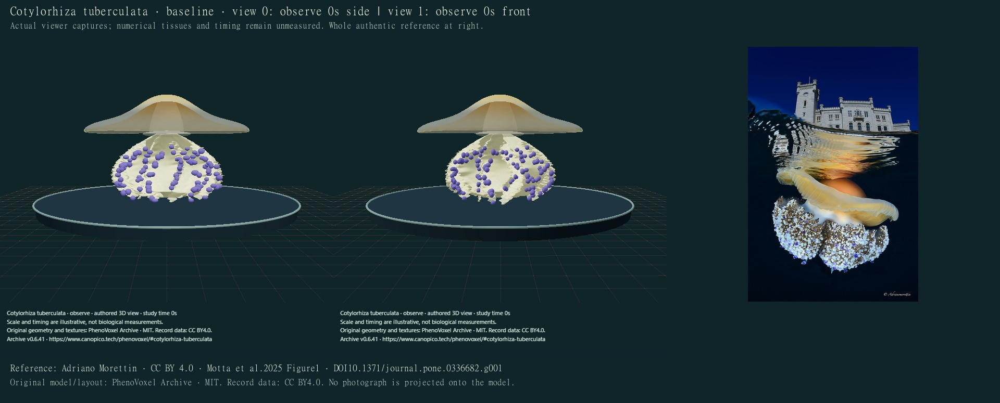
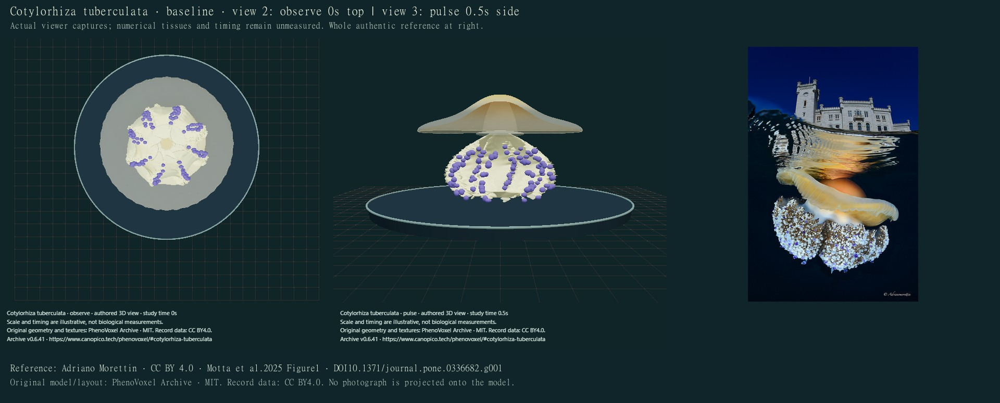
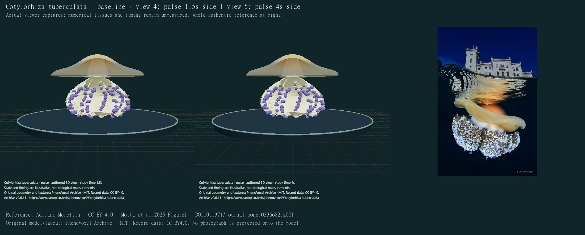
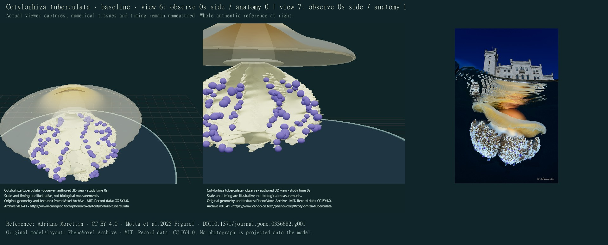
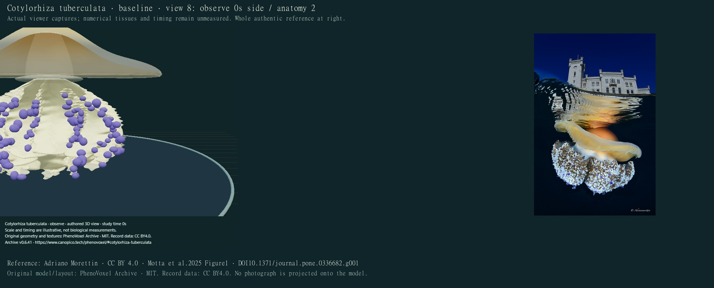
24 actual final compiled main-viewer states were individually inspected on12credited sheets. All final captures use software compatibility rendering. Tissue refraction, scattering and final WebGL optics are unverified. Display seconds and normalized scale are illustrative. Selected anatomical close-ups use one zoom-out step for context.
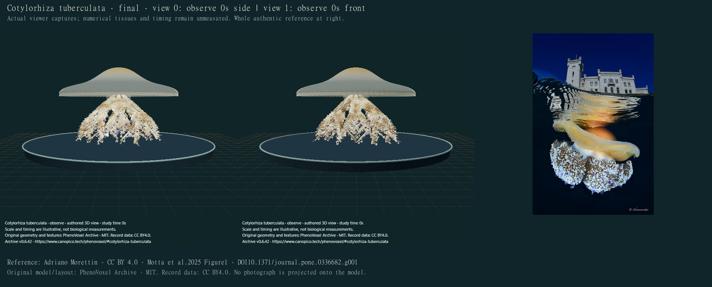
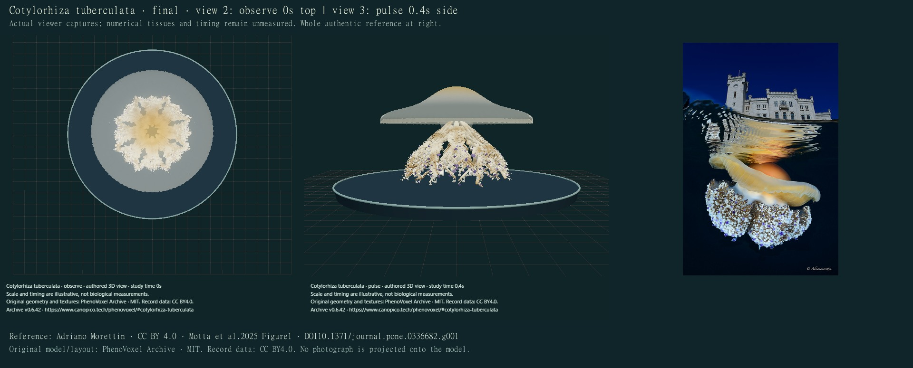
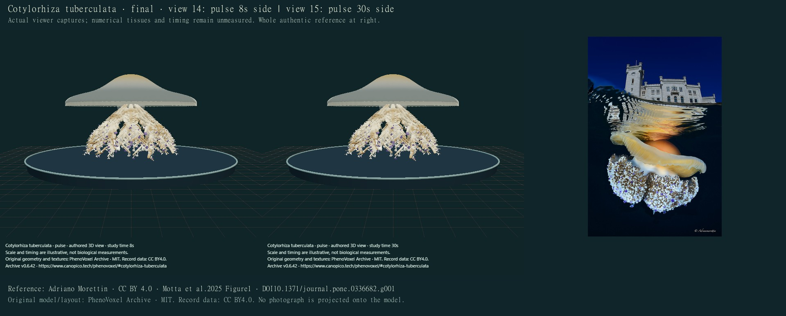
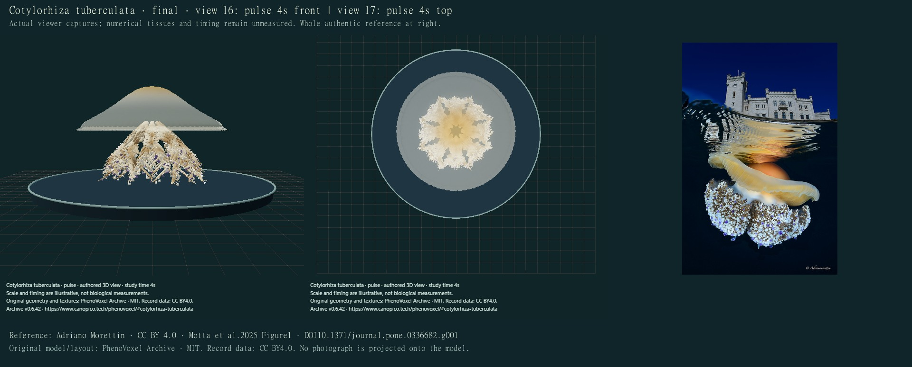
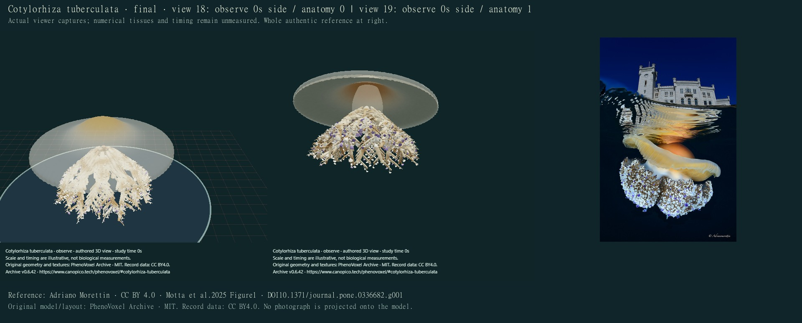
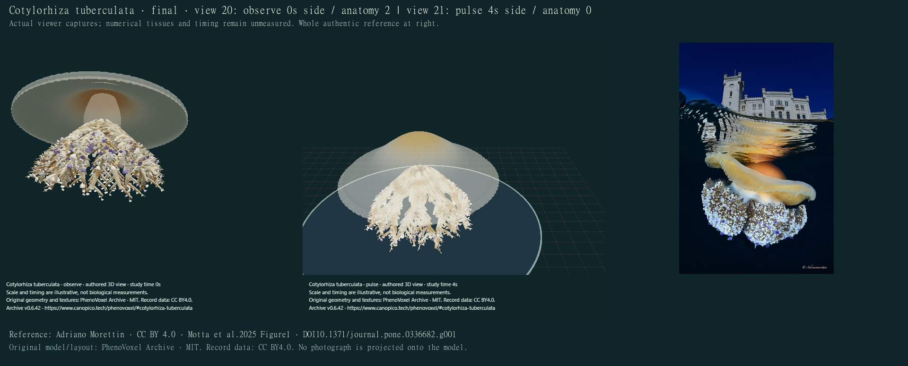
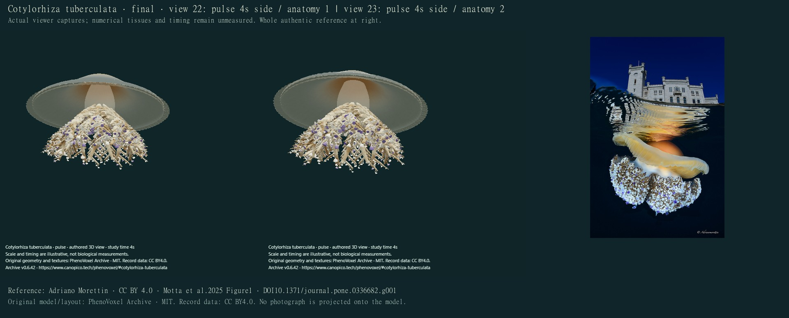
| Area | Correction | Remaining limitation |
|---|---|---|
| Oral body | Separate rounded axes, distal forks and smaller lateral folded tissues. | External pieces overlap rather than form fused histology; canal lumens, anastomoses and complete mouthlets are absent. Branch rhythms and central transitions remain too regular. |
| Club-shaped tips | Selected slender pale pedicles, expanded terminal exteriors, varied sizes and white/violet tips. | Closed simplified ends, partly pointed silhouettes and numerical repeats remain. Shape, colour and count are not specimen fits. |
| Bell and skin | Rounded crown, finer margin relief, original spatial pigment and corrected visible depth. | Pale appearance, repeated marginal relief, tissue thickness and optical response still differ from photographs. No measured refractive or scattering constants. |
| Motion | Fixed central dome with distal flexion, attached oral deformation and finite recovery. | No root propulsion, muscle/flow/pressure solution, prey handling or physiological simulation; no measured timing. |
Drafts were rejected for a narrow stalk-like oral region, overly thick exposed support branches, sparse tips, rear surfaces painting through front tissue and unsuitable close-up framing. The retained correction is still an educational authored exterior. Software tests cover closed noncollapsed tissues, bounded motion, central-dome stability, retained geometry/material/pigment, exact reset and provenance preservation. All292full local software checks passed. Such checks do not establish biological accuracy, full collision freedom or independent review.
Machine-readable findings and capture ledger · Movement/development implementation inventory. Other jellyfish and broader realism/mechanism requests remain unfinished.
_-_Mar_Jonio,_Italy.jpg){kind=link}